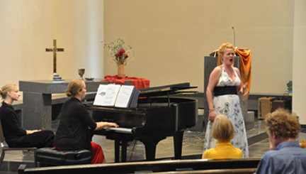

2012-2013 Fine Arts Series
Carillon RecitalsPlease bring a lawn chair to enjoy the carillon recitals.
Sunday, June 2, 4:00 p.m CDT
Malgosia Fiebig, city carillonneur of Utrecht and Nijmegen, The Netherlands
Malgosia Fiebig is the city carillonneur of Utrecht and Nijmegen in The Netherlands. She was born in 1975 in Gdansk, Poland and studied at the Music Academy of Gdansk, where she earned a Master of Music in Organ Performance in 1999 and in Choral Conducting in 2002. In 1999 she followed a carillon course led by Gert Oldenbeuving, after which she became the first carillonneur after sixty years to play the bells in Gdansk (St. Catharina Church). In 2001 she was appointed a second carillon in the City Hall Tower in the heart of Gdansk. She gave weekly concerts on these carillons, and organised yearly summer carillon festivals. In 2001 she studied with Bernard Winsemius and Arie Abbenes at The Netherlands Carillon School Amersfoort with a European Socrates scholarship. In 2004 she moved to The Netherlands and earned a Bachelor of Music in Carillon Performance a year later with Arie Abbenes. Malgosia received her Master's diploma in June 2007 with Frans Haagen and Henk Verhoef.
International Carillon Competitions
3rd Prize – Queen Fabiola Competition, Mechelen, 2008
1st Prize – International Duet Competition in Zwolle, 2007
1st Prize – Category A (with diploma) in Tiel, 2006
1st Prize – Category B (without diploma) in Enkhuizen, 2002
3rd Prize – Hamburg, 2001
1st Prize – International Duet Competition in Zwolle, 2007
1st Prize – Category A (with diploma) in Tiel, 2006
1st Prize – Category B (without diploma) in Enkhuizen, 2002
3rd Prize – Hamburg, 2001
She has given carillon concerts in Europe, Curaçao and the USA. As a pianist, she accompanies soprano Andrea van Vuuren and performs regularly with several choirs.
Sunday, July 7, 3:30 p.m. CDT
Tim Sleep, city carillonneur of Naperville, Illinois
Mr. Sleep will play a half-hour program of patriotic music at 3:30 p.m. on his calliope. The carillon recital will follow at 4:00 p.m.
Tim Sleep was appointed Naperville City Carillonneur in 2007 where he teaches and performs regularly on the Millennium Carillon, Naperville, Illinois. He performs carillon recitals at Rockefeller Memorial Chapel, University of Chicago, the Chicago Botanic Gardens and guest recitals throughout the country. He is also an Instructor for the North American Carillon School.
Mr. Sleep currently serves as Vice President of the Guild of Carillonneurs in North America (GCNA) previously serving as its Corresponding Secretary and performing on the New Music recitals at recent GCNA Annual congresses. He is a Board Member and Secretary of the Millennium Carillon Foundation in Naperville.
He began his carillon studies with Wylie Crawford in Naperville and continued with John Gouwens at the Culver Academies in Culver, Indiana becoming a Carillonneur member of the Guild of Carillonneurs in North America in 2004. He holds a Bachelor's Degree in Music Education from North Central College in Naperville and a Master of Science in Educational Administration from Northern Illinois University in DeKalb, Illinois. A retired band director and middle school principal he is long-time church musician currently serving as organist for Knox Presbyterian Church in Naperville.
Sunday, August 11, 4:00 p.m. CDT
Wylie Crawford, University of Chicago and Chicago Botanic Garden carillonneur
Wylie Crawford is the University Carillonneur at the University of Chicago, a position he has held since 1984. He is also the Resident Carillonneur for the Chicago Botanic Garden in Glencoe, Illinois (since 1986) and was the first City Carillonneur for the Millennium Carillon in Naperville, Illinois.
He is the President of the World Carillon Federation (www.carillon.org), a federation of international associations that organizes conferences in countries with a carillon culture. Previously, Mr. Crawford served as its Treasurer from 1990 until 2006, when he was elected President.
With an undergraduate degree in Physics and a graduate degree in teaching from the University of Chicago, Mr. Crawford is pleased to have initiated the first regular carillon instruction programs at four Chicago-area carillons.
Mr. Crawford fulfilled the requirements of the Guild of Carillonneurs in North America to become a certified Carillonneur in 1977. During his thirty-nine year association with the Guild, he served three years as its Vice President and is currently the Chair of its Membership Committee and a member of the GCNA Web committee (www.gcna.org). He has given carillon recitals in Belgium, Canada, Denmark, France, Japan, Mexico, Netherlands, Sweden, and the U.S. He appears occasionally as “The Spirit of the Bells” at various Renaissance Festivals on one of the three North American traveling carillons.
A Chicago native, he is the father of twin daughters and husband of Erica Karp, a social worker.
14th Biennial Juried Art Exhibition
April 28 through May 17, 2013, 2:00 to 4:00 p.m. CDT daily
Opening reception, Sunday, April 28, 2013, 2:00-4:00 p.m. CDT
The 14th Biennial Juried Art Exhibition includes the works of 46 artists from the Michiana region.
The award winners are:
- Best of Show: Randy Horst, Goshen, “Job #3”, Mixed Media
- 1st Place: Linda Freel, South Bend, “Woodland Fantasy II & Woodland Fantasy III”, Mixed Media - Pastel
- 2nd Place: Connie Kassal, Long Beach, “Spirited Drawing I”, Oil and Graphite on Oil Paper
- 3rd Place: Jimmy Duke Johnston, Michigan City, “Plants”, Acrylic
Juror for the 14th Biennial Juried Art Exhibition – Ann M. Knoll
Ann M. Knoll has served as the Associate Director of the Snite Museum of Art, the University of Notre Dame, since mid-December of 2000. Her degrees include a BA in the history of art from the University of Michigan, Ann Arbor, and a MBA from Western Michigan University, Kalamazoo.
Prior to her current position with the Snite Museum of Art, Ann was the Director of the Saginaw Art Museum, Saginaw, Michigan, for seven years.
Ann has been selected to judge regional art competitions for various Michigan arts organizations such as the Berrien County Artist Guild; the Jesse Besser Museum in Alpena, and the Ella Sharp Museum in Jackson. She has also served as judge for the East Tawas Summer Art Fair and the annual June art fair organized by the Kalamazoo Institute of Arts.
Photos from the 14th Biennial Juried Art Exhibition

Wooster Chorus, Dr. Lisa Wong - Director
The College of Wooster, Wooster, Ohio
Friday, March 15, 2013, 7:30 p.m. CDT
We are delighted to host the 50-voice Wooster Chorus. This will be the final concert in the 2013 Wooster Chorus Tour before they return home to Wooster, Ohio. In this concert tour, The Wooster Chorus explores the foundations of human existence. Our capacities for love, our perception of deep beauty, and our sensitivity to an expansive range of emotions are among the wealth of traits that define our humanity. Here, we survey a multidimensional journey from the basal toward self-transcendence in a program that includes the music of Johann Sebastian Bach, Maurice Duruflé, Samuel Barber, and Eric Whitacre.
About 50 choral concert attendees enjoyed a lasagna dinner because the concert was cancelled due to a Wooster Chorus bus breakdown near Chicago.
John Gouwens, organist
The Culver Academies, Culver, Indiana
Sunday, February 10, 2013, 4:00 p.m. CST
John Gouwens has been Organist and Carillonneur of The Culver Academies (Culver Military Academy and Culver Girls Academy) since the fall of 1980. In 1989-90 and again from 1996 to 2004, he also served as Choir Director of The Academies. He also plays and teaches carillon at Indiana University (Bloomington) and Ball State University (Muncie).
Raised in Fort Wayne, he studied piano with Jack Ruhl and organ with Richard Carlson. Subsequently, he pursued college studies as an organ major at Indiana University, the University of Michigan, and the University of Kansas, with B.M. and M.M. degrees, respectively, from the latter two schools. His college organ instructors included Clyde Holloway, Robert Clark, and Robert Glasgow. He studied carillon extensively as well, notably with Albert Gerken at Kansas.
Organ Recital Program for February 10, 2013
Praeludium in e-minorNicolaus Bruhns
Allein Gott in der Höh sei EhrJ.S. Bach
Ciacone in DJohann Pachelbel
Liebster Jesu, Wir sind hier J.S. Bach
CarillonWilliam Mathias
“Prologue” from A Wartime Sketchbook
CarolGerald Finzi
Hymn and Improvisation
Prelude and Fugue in AJ.S. Bach
Cortège rustiqueEugène Gigout
Carillon de WestminsterLouis Vierne
He was a finalist in the National Organ Competition at First Presbyterian Church in Fort Wayne in 1979, 1984, and 1989, and holds numerous other contest honors in organ and in carillon. In 1990, he won first prize in the International Organ Performance Competition held by the University of Michigan. His organ and carillon playing have been included in five programs of Pipedreams, broadcast nationally on American Public Media. Gouwens is also very active in the carillon field and as a composer. This summer, he will make his seventh European carillon recital tour. In 1992, he won an international competition for carillon composition in Belgium, and his winning piece (published by the Royal Carillon School of Mechelen, Belgium) was required for finalists in the Queen Fabiola Competition in 1993. He won another composition competition in 1993, writing a choral piece for the Bicentennial of the City of Fort Wayne, which was performed at the opening festivities of that city's celebration by the Fort Wayne Philharmonic Choir. John Gouwens has served in many leadership positions in the Fort Wayne and Saint Joseph Valley chapters of The American Guild of Organists. In addition, he has given several presentations on improvisation, hymn playing, and musical interpretation matters for various AGO chapters. He is also active as an organ recitalist, having given recitals at many notable venues around the country.
Praeludium in e-minorNicolaus Bruhns
Allein Gott in der Höh sei EhrJ.S. Bach
Ciacone in DJohann Pachelbel
Liebster Jesu, Wir sind hier J.S. Bach
CarillonWilliam Mathias
“Prologue” from A Wartime Sketchbook
Sir William Walton
CarolGerald Finzi
Hymn and Improvisation
Prelude and Fugue in AJ.S. Bach
Cortège rustiqueEugène Gigout
Carillon de WestminsterLouis Vierne
Mr. Gouwens is the author of the first American carillon teaching book written (and the only one currently available), Playing the Carillon: An Introductory Method, published by The Guild of Carillonneurs in North America.
Mr. Gouwens also served as consultant in the planning, design and adjustment of The Children's Carillon, located at the entrance of The Presbyterian Church of La Porte, and also played the dedication recital on May 16, 2004.
Hastey Pudding Puppet Company
Sunday, September 16, 2012, 4:00 p.m. CDT
When the evil witch Cora steals the magic yellow ribbon from the hair of her sister in sorcery, Hermione, “the pretty good”, the stage is set for a gripping drama which pits good against evil, mind against the mindless and the ridiculous against the sub-slime. The quest for the ribbon catches the imagination of the audience and snatches up an innocent bystander in the process. The audience acts as referee in this brouhaha among bozos and eventually helps to bring order out of chaos...almost. The moral of the story? Don't judge folks by what you see on the outside. It's what's inside that counts. No limit on the fun or the folks who are likely to enjoy this one. A family entertainment with actual humor for the people who drove the short folks to the theater.
www.thepuppetguys.com
Sarah Gartshore, soprano
 Cantatas and French Romantic Gems
Carey Scheck, pianist
Sunday, October 14, 2012, 4:00 p.m. CDT
The first half of the program consists of 2 contrasting cantatas; the first a Handel Cantata from 18th century Europe. The second a distinctly 20th century American take on the Cantata by composer John Carter based on Negro Spirituals.
The second half features a pastiche of French Romantic gems by composers like Bizet (Carmen) and Poulenc and ends with a rarely performed Vocal Concerto by turn of the century Russian composer Rheinhold Gliere. There are no words and the voice in this piece is treated like any other instrument you would hear featured in a concerto exploring the extremes of the instrument and the abilities of the player, or in this case the singer.
Canadian soprano Sarah Gartshore was recently selected as one of Symphony Magazine's emerging artists. Her performance of excerpts from Stravinsky's The Rake's Progress with the Richmond Symphony (VA) inspired the Times-Dispatch to write, “Soprano Sarah Gartshore sang the arias with strong characterization, full-bodied tone and unusually clear diction, promising some fine portrayals of Anne Trulove in future productions of this opera.”
As a Santa Fe Apprentice Artist, Ms. Gartshore made her debut with Santa Fe Opera as the First Lady in Mozart's Die Zauberflöte and returned for a second season to cover the roles of Fiordiligi in Mozart's Così fan tutte and Thalie/La Folie in Rameau's Platée. The Chicago Sun-Times praised Ms. Gartshore as “delightful” in her multiple roles as Madame Herz in Mozart's Der Schauspieldirektor and Tonina in Salieri's Prima la Musica, poi le Parole following one of her many collaborations with Jane Glover and Chicago's Music of the Baroque. Her portrayal of the desperate Magda, described by Opera Canada as “startlingly dramatic” was a highlight of Chamber Opera Chicago's recent production of Menotti's The Consul.
Recent performances include a debut with the Grammy nominated Chicago Chamber Musicians singing Scarlatti's Su le sponde del Tebro, her Symphony Center debut with the Apollo Chorus performing Brahms' Requiem, Donna Anna in Don Giovanni with American Opera Group, Micaëla in Bizet's Carmen with Chamber Opera Chicago, Santuzza in Mascagni's Cavalleria Rusticana with the Skokie Valley Symphony (IL), the title role in the Chicago premiere of Barber's Vanessa with Chamber Opera Chicago, Brahms' Requiem with the Kingston Symphony (ON), and Messiah with the Algoma Chamber Singers (ON). This past summer she performed the role of Lily Craven in the Southwest Michigan Symphony's production of The Secret Garden.
Much in demand on the concert stage, Ms. Gartshore's expansive repertoire includes performances of Dvorak's Mass with the International Choral Arts Festival of Jihlava in the Czech Republic, Messiah with the Richmond and Jacksonville Symphony Orchestras, Haydn's Heiligmesse, Pergolesi's Stabat Mater and the Te Deum of Delalande and Charpentier with Music of the Baroque, Brahms' Requiem and Mahler's Fourth Symphony with the Richmond Symphony, Mahler's Second Symphony and Verdi's Requiem with the Muncie Symphony (IN), and Countess Almaviva in a concert reading of Mozart's Le nozze di Figaro with the Northbrook Symphony (IL). As a nine year veteran of The Handel Week Festival of Oak Park (IL) she has performed several solo cantatas, Judas Maccabaeus, Esther, Fulvia in Ezio, and Galatea in Acis and Galatea.
Upcoming engagements include Messiah with The Canterbury Music Society, Mozart's Requiem with Chicago's Apollo Chorus and Ms. Gartshore will appear as a featured guest artist with the La Porte Symphony on their Holiday Pops concert.
Ms. Gartshore is also heard performing with guitarists Sergio and Odair Assad on Merry a Holiday Journey, a recently released CD of selections for Christmas by violinist Nadja Salerno-Sonnenberg and friends.
Carey Scheck is an independent piano teacher of a variety of ages and levels. After attending Valparaiso University to receive a degree in church music, Scheck attended Western Illinois University for a Masters Degree in Piano Performance. Her collegiate teachers included Dr. Joseph Bognar and Dr. Tammie Walker. As a student, Carey was fortunate to have experiences in accompanying, teaching lessons to individuals in an after school piano program, playing piano for the Wind Symphony and Orchestra, and teaching a piano class for undergraduate music majors. In addition to her responsibilities as a teacher, Scheck is an active performer in the NW Indiana area and a church musician at the Presbyterian and Episcopal churches in La Porte.